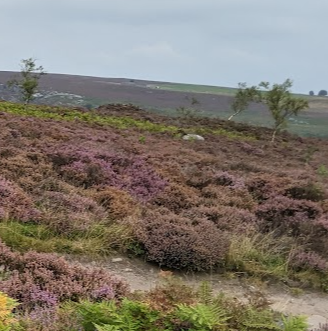
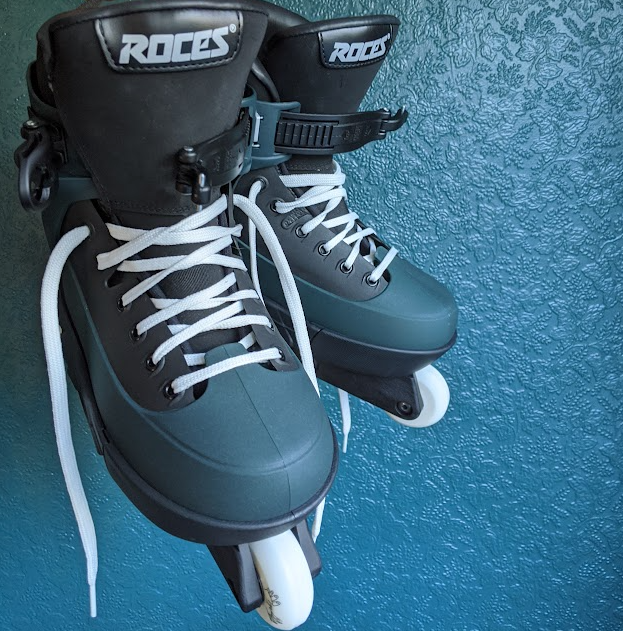
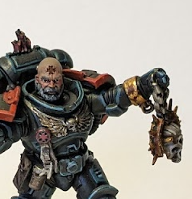
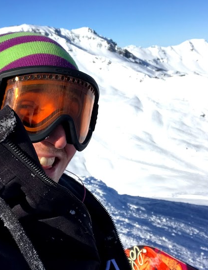

Outdoors
Hiking and spending time outdoors is incredibly important to me, I’m lucky enough to have the peak district on my doorstep so weekends are often spent with family exploring new and old locations.
Rollerblading
Spending time with skates on my feet is one of the great joys of my life, I’ve been skating for most of my life and have travelled to the Netherlands to witness the electric atmosphere of Winterclash numerous times.
Art
Art is a prominent interest of mine and as a result, I chose to study this at University. I take pleasure in visiting galleries still work creatively producing output ranging from sculpture to traditional styles of drawing and painting along with a passion for painting miniatures.
Snowboarding
I’ve been fortunate to spend family holidays snowboarding since I was small, learning to ski at a very young age until transitioning into snowboarding at the age of 11 , I’m looking forward to the time I am able to teach my two young children the magic of the mountains.
Reading
I love to read for myself and my children, I’m working my way through the bibliography of numerous authors, from Terry Pratchett to Neil Gaiman and Philip K Dick. I also adore reading with my kids, their bedtime is a special time for our family where we get to sit and enjoy a story together.